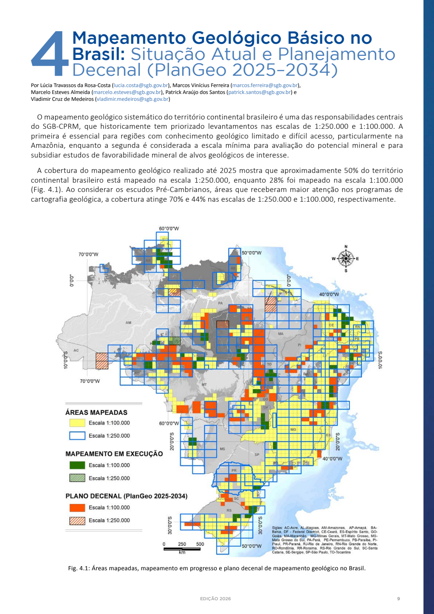

UM PAÍS. UM SUBSOLO. MUITAS POSSIBILIDADES.
O futuro está
sob nossos pés.
Dos solos de Goiás aos complexos de Minas Gerais, os minerais brasileiros ajudam a mover o mundo.
Explore o que temos, o que conhecemos e o caminho que separa uma jazida de uma tecnologia.
Comece pelo território ↓01 — O TERRITÓRIO
Um mapa, muitas camadas.
Troque a camada. Escolha um lugar.
Descubra o que os dados revelam.
Desenhando o território…
MALHAS IBGE · PROJEÇÃO CÔNICA CONFORME
EXPLORE OS 7 REGISTROS
Os pontos localizam municípios de referência, não jazidas. Selecione um projeto para ver a malha municipal. Esta seleção não é um inventário nacional completo.
02 — A DIMENSÃO DA OPORTUNIDADEUSGS · MCS 2026
Ter a reserva
é só o começo.
O Brasil tem uma das maiores reservas conhecidas de terras raras. Sua participação na produção ainda é pequena.
REO = óxidos de terras raras. Reservas são uma estimativa do que pode ser extraído economicamente; produção é o que sai das minas em um ano.
Por que 21 milhões, e não 11?
A edição original do USGS 2026 estimava 21 Mt para o Brasil. Em 27 de maio de 2026, o USGS revisou o valor para 11 Mt. O atlas preserva a série histórica da pesquisa original; alterne a edição para comparar.
Histórico oficial de revisões ↗03 — A MATÉRIA DO FUTURO17 ELEMENTOS · FUNÇÕES DIFERENTES
Raras no nome.
Presentes no cotidiano.
Do ímã que move um carro à fibra que transporta informação. Escolha uma aplicação e descubra como cada material é usado.
Terra rara Outro material
Selecione um material para consultar a ficha e as fontes ↗
Exemplos de uso: a composição varia com o projeto. Os materiais listados não estão necessariamente presentes juntos. A presença em uma jazida não comprova fornecimento a estas tecnologias.
Conheça a família completa: as 17 terras raras
Cada elemento tem funções diferentes. Selecione um para consultar os usos, os registros no atlas e as fontes.
04 — OUTROS MINERAIS15 PERFIS · PRODUÇÃO E RESERVAS
O Brasil além
das terras raras.
Selecione um mineral para comparar a produção e as reservas de Brasil, China e Estados Unidos.
Reservas
Cada gráfico tem sua própria escala, a partir de zero. Produção é um fluxo anual; reservas são uma estimativa do estoque economicamente extraível. Dado ausente não significa zero.
05 — ALÉM DA MINAIEA · TERRAS RARAS MAGNÉTICAS · 2024
A riqueza está também
no que vem depois.
Extrair, separar e fabricar são capacidades diferentes. A concentração da cadeia ajuda a explicar por que o subsolo, sozinho, não determina o futuro.
Participação da China na cesta de terras raras magnéticas da IEA, em 2024. Cesta diferente da estatística mineral do USGS. Consultar estudo ↗
DADOS ABERTOS. FONTES À VISTA.
Explore. Questione.
Confira a origem.
Recorte editorial de 5 de outubro de 2026. As fichas mantêm as datas e classificações das fontes. Novas pesquisas podem mudar esse retrato.
Baixar todos os dados ↓JSON · EDIÇÃO COMPLETAComo tratamos os dados e as diferenças entre eles
Reserva ≠ recurso
Recurso é uma estimativa geológica. Reserva exige critérios técnicos e econômicos. Quantidades de minério, de metal e de óxidos não se somam.
Sem informação ≠ zero
Dados ausentes, sigilosos e valores iguais a zero têm representações diferentes. Recursos históricos estão identificados em cada ficha.
Um mapa tem limites
Malhas IBGE delimitam estados e municípios. Folhas SGB mostram a extensão dos mapas geológicos publicados, não os limites de depósitos ou concessões minerais.
Cobertura não é descoberta
Os percentuais de 28% e 50% vêm do balanço nacional SGB até 2025. O inventário vetorial é uma consulta separada; folhas podem se sobrepor. Área mapeada não equivale a área com minerais.
Consultar todas as fontes e documentos
Ver a cartografia original de cobertura do SGB
